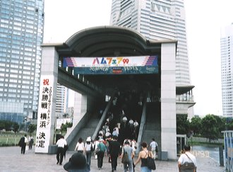
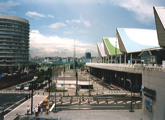
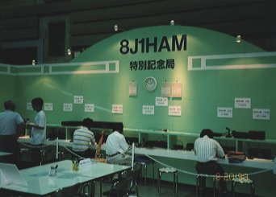
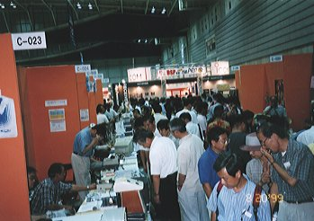
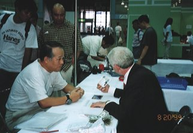
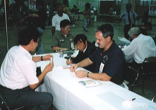
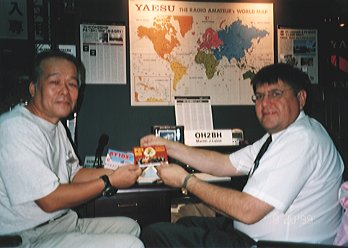
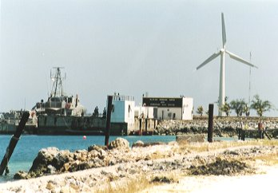

'99 アマチュア無線フェスティバル IN パシフィコ横浜


「パシフィコ横浜」の展示場1階入口(右)
展示場と道路との間に3基(1階と2階)のアンテナタワーが建っている


会場全体の1/4程度のスペースに"押しやられた"感のあるクラブ・ブースは
通路が狭く初日の金曜日でもこの混雑 土、日には歩けないほどの大混雑に...



他にBY1DX、FW8ZZ、BT2HC、UE0LEZのQSLが貰える
|
[ハムフェアの歴史] ハム・フェアの前身「第1回全日本ハムベンション」が1975年(昭和50年)、静岡県富士宮市で開催された。 会場は富士の裾野に広がる朝霧高原のグリンパーク。 1976年の第2回では特別記念局の8J2HAMも開局、交通の便は良くないものの自然を満喫出来る会場は多くの来場者で賑わった。 この実績を基礎に、1977年(昭和52年)「全日本ハムベンション」を引き継ぐ形で「第1回アマチュア無線フェスティバル」(ハムフェア)が、 JARLの主催で、東京都中央区晴海の東京貿易センターで開催される事になった。 第1回は9月23日から25日までの開催期間にも関わらず、初日から多くの入場者がつめかけた。 フェスティバルの特別記念局・8J1HAMも開設、多くの来場者が運用した。 1999年、22回を迎えた「アマチュア無線フェスティバル」(ハムフェア)は、初めて東京を離れて神奈川県下で開催される事になった。 |
 |
Flash Newsへ |